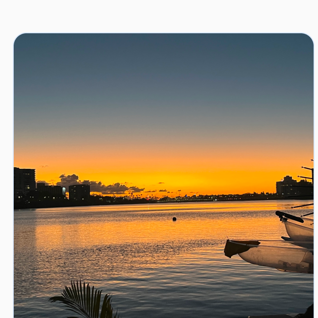
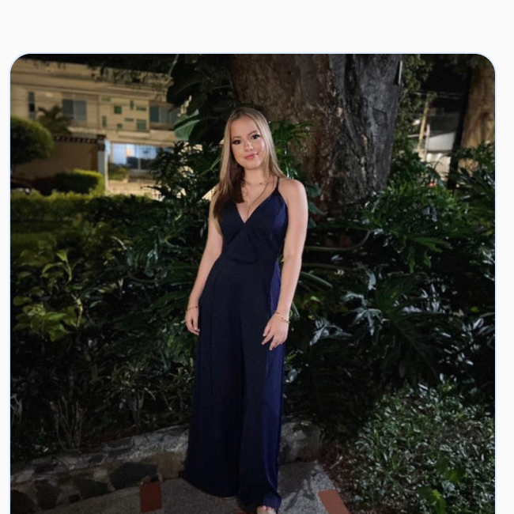
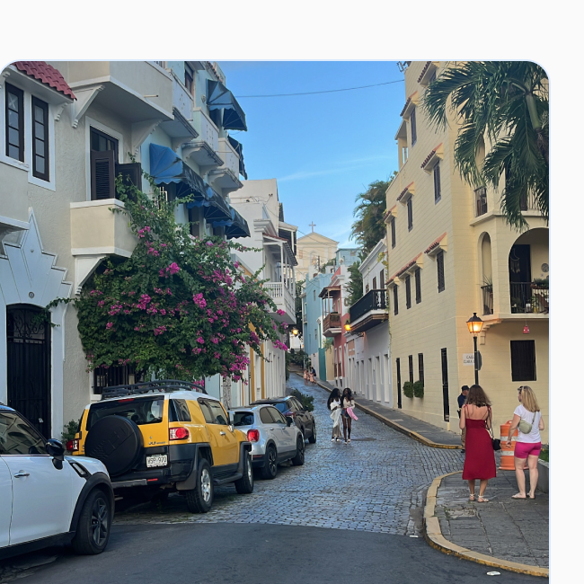
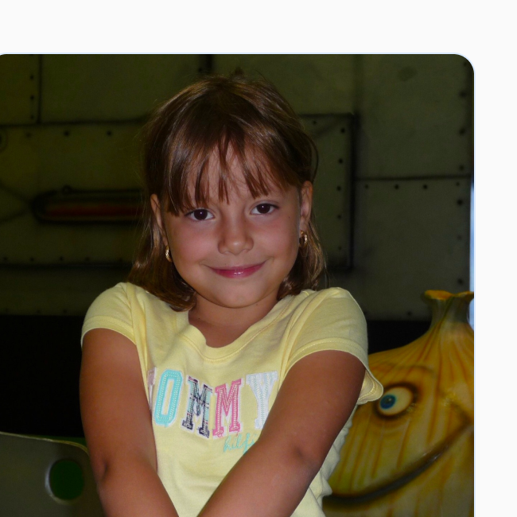

Hi, I’m Mariana
A UX Designer that crafts thoughtful
digital experiences that balance user
needs with business goals.
A UX Designer that crafts thoughtful digital
experiences that balance user needs with
business goals.
About me
My name is Mariana Bello and before diving into what I do now, I want to share a bit about how I got here — because it’s been quite a journey.
At 17, fresh out of high school in Colombia, I started law school and spent three years thinking it would be my future. I was good at it and enjoyed the challenge, but eventually realized it wasn’t the life I wanted. Walking away wasn’t easy, those years shaped my identity, but it was the best decision I could’ve made. Law school gave me discipline, structure, and a passion for understanding and helping people. I just needed a different path to apply those strengths.
After moving to the U.S., I explored new paths and took design classes. That’s when everything clicked—art, tech, human behavior, and systems. UX Design brought it all together, blending creativity with strategy in a way that finally felt right.
My journey into design hasn’t been linear, and that’s what makes it powerful. I bring a unique perspective shaped by different cultures, disciplines, and life shifts. I know what it means to pivot and grow and that mindset shapes how I design.




Let's Connect
I'm always open to new opportunities and interesting projects. Feel
free to reach out if you'd like to collaborate!